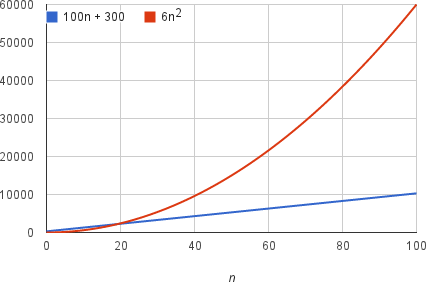

El tiempo de ejecución de un algoritmo depende de cuánto tiempo le tome a una computadora ejecutar las líneas de código del algoritmo, y eso depende de la velocidad de la computadora, el lenguaje de programación y el compilador que traduce el programa del lenguaje de programación al código que se ejecuta directamente en la computadora, entre otros factores. Pensemos más cuidadosamente acerca del tiempo de ejecución de un algoritmo. Podemos usar una combinación de dos ideas. Primero, necesitamos determinar cuánto tiempo se tarda el algoritmo, en términos del tamaño de su entrada. Esta idea tiene sentido intuitivamente, ¿o no? Ya vimos que el número máximo de intentos en una búsqueda lineal y una búsqueda binaria aumenta a medida que la longitud del arreglo aumenta. O piensa en un GPS. Si solo supiera acerca del sistema carretero del país, y no acerca de cada pequeño camino, sería capaz de encontrar rutas más rápido, ¿cierto? Así que pensamos acerca del tiempo de ejecución del algoritmo como una función del tamaño de su entrada.
La segunda idea es que debemos enfocarnos en qué tan rápido crece una función con el tamaño de la entrada. A esto lo llamamos la tasa de crecimiento del tiempo de ejecución. Para mantener las cosas manejables, tenemos que simplificar la función para extraer la parte más importante y dejar de lado las partes menos importantes. Por ejemplo, supón que un algoritmo, que corre con una entrada de tamaño n, se tarda 6n^2 + 100n + 300 instrucciones de máquina. El término 6n^2 se vuelve más grande que el resto de los términos, 100n+300, una vez que n se hace suficientemente grande, 20 en este caso. Aquí hay una gráfica que muestra los valores de 6n^2 y de 100n+300 para valores de n de 0 a 100.
Diríamos que el tiempo de ejecución de este algoritmo crece como n^2, descartando el coeficiente 6 y los términos restantes 100n+300. En realidad, no importa qué coeficiente usemos; siempre que el tiempo de ejecución sea an^2+bn+c, para algunos números a>0,b y c, siempre habrá un valor de n para el cual an^2 sea mayor que bn+c, y esta diferencia aumenta a medida que n aumenta.
f(n) = an (algoritmos lineales)
f(n) = an^2 (algoritmos cuadráticos)
f(n) = an^3 (algoritmos cúbicos)
Un algoritmo puede estar compuesto de dos o más operaciones, por lo que determinar la complejidad depende de identificar la operación más costosa en el algoritmo.
Aquí se muestra un video donde habla acerca de notación asintótica: https://www.youtube.com/watch?v=kGrgIvRcojo